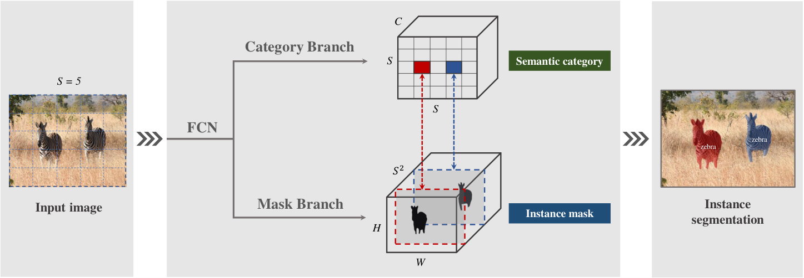
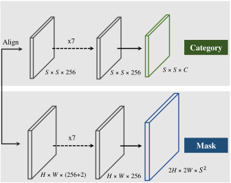

看下图的两只斑马：类别都是 zebra，但中心落在不同网格。红色网格负责左边那只，蓝色网格负责右边那只。

每个网格预测类别分数。
S × S × C每个位置对应一个掩码通道。
H × W × S²
图里的坐标通道有什么用？让掩码分支知道“当前在图像的哪里”，从而区分外观相似、位置不同的实例。S 是每边的网格数，C 是语义类别数；两条分支通过同一个网格位置对应起来。
训练时，中心附近可有多个网格负责同一目标，因此输出后还需要去重。
Backbone + FPN，处理不同尺度。
每个网格输出类别与实例掩码。
按置信度筛选，用 NMS 去掉重复掩码。
先找候选框，再在 RoI 内分割。
按位置分配任务，直接预测完整实例掩码。
记住这一点：SOLO 把“实例身份”绑定到位置。下一篇 SOLOv2 保留这个思路，改变掩码生成方式。